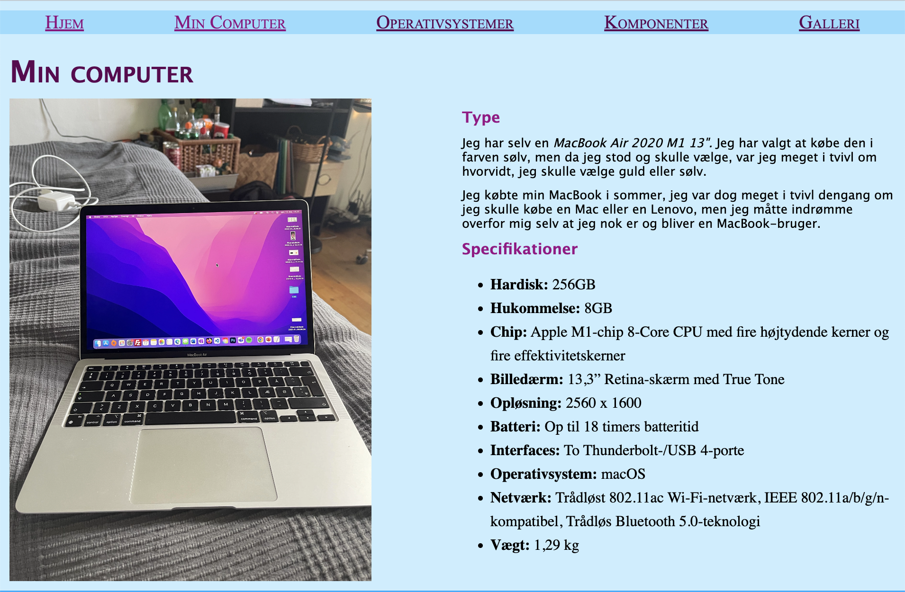
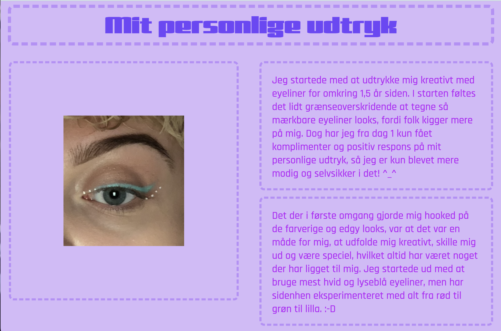

TEMA 2
I Tema 2 lærte vi om filformater, billedbehandling og opsætning af tekst og billeder i XD . Vi blev endvidere introduceret til digitale brugergrænseflader, indholdsproduktion, digital kommunikation og responsiv design.
Jeg brugte min nye tilegnede viden om eksempelvis digitale brugergrænseflade til mit arbejde med Moodboard, Style Tile, skitser, gestalt lovene, fonte, stilarter og responsivt design.
Studiestartsprøven
Min studiestartsprøve gav mig anledning til at løse den givne opgave vha. responsivt design, og brug af både gridbox og flexbox. Jeg valgte eksempelvis at bruge flex på mit site komponenter og grid på mit site operativsystemer.
Emnesite
Jeg valgte stilarten Retro design til mit emnesite som bl.a. kan ses med teksturen omkring paragrafferne, udtryksfulde skrifte og et meget personligt og nostalgisk udtryk af websites tilbage i tiden. Jeg anvendte også min nye viden indenfor css til at konstruerer en funktionel hamburger-menu.
TEMA 2
I tema 2 lærte vi om filformater, billedbehandling og opsætning af tekst og billeder i XD . Vi blev endvidere introduceret til digitale brugergrænseflader, indholdsproduktion, digital kommunikation og responsiv design.
Jeg brugte min nye tilegnede viden om eksempelvis digitale brugergrænseflade til mit arbejde med Moodboard, Style Tile, skitser, gestalt lovene, fonte, stilarter og responsivt design.
Studiestartsprøven
Min studiestartsprøve gav mig anledning til at løse den givne opgave vha. responsivt design, og brug af både gridbox og flexbox. Jeg valgte eksempelvis at bruge flex på mit site komponenter og grid på mit site operativsystemer.
Emnesite
Jeg valgte stilarten Retro design til mit emnesite som bl.a. kan ses med teksturen omkring paragrafferne, udtryksfulde skrifte og et meget personligt og nostalgisk udtryk af websites tilbage i tiden. Jeg anvendte også min nye viden indenfor css til at konstruerer en funktionel hamburger-menu.